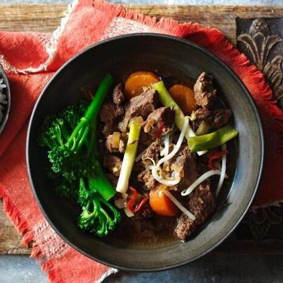

Projects
Recipes
Contact
Slow Cooker Korean Beef

Packed with flavour and meltingly tender beef, try this classic comfort food with steamed rice and greens.
Serves 6 | Takes 480 mins
Original recipe:
https://www.bbc.co.uk/food/recipes/slow_cooker_korean_beef_67459
main
meat
sesame
soy
Ingredients
1 onion, chopped
2 carrots, cut into 1cm/½in slices
1 tbsp vegetable or sunflower oil
500g beef brisket, trimmed of excess fat and cut into matchbox-size cubes, or long, thick slices
5 garlic cloves, crushed or finely chopped
5cm piece fresh root ginger, finely grated
1 fat red chilli, shredded (leave seeds in if you like)
2 tbsp light muscovado sugar
1 tbsp miso paste (optional, adds extra depth)
6 tbsp light soy sauce
300ml beef stock
1 tsp sesame oil, plus more to serve
2 bunches spring onions, trimmed then cut into finger-length pieces
Few handfuls fresh beansprouts
Method
Place the onion and carrots into a slow cooker. Heat the oil in a large non-stick frying pan, then fry the beef in two batches until golden-brown, transferring to the slow cooker when ready. Scatter with the garlic, ginger and chilli.
Stir the sugar, miso, soy, stock and sesame oil into the juices in the frying pan then bring to a simmer, stirring to dissolve the miso and sugar. Pour the hot liquid over the beef and vegetables, cover with the lid and cook on low for 7½ hours.
Scatter with the spring onions, re-cover the slow cooker then cook for another 30 minutes until the onions are tender. Stir in the beansprouts, then drizzle with a little more sesame oil. Serve with steamed broccoli and boiled rice.